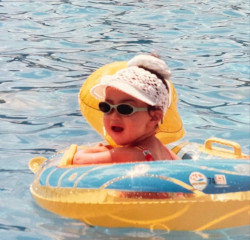
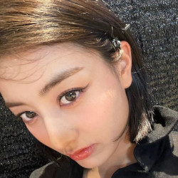
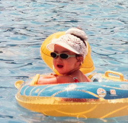
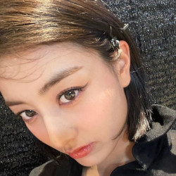

Um pouco mais de Jihyo
Jihyo é alergica a abacaxi, a pelo de cachorros e gatos, mas ela tem um gato chamado bbuyo.
O tipo ideal de Jihyo é alguem que faça ela se sentir ela mesma.


Jihyo é alergica a abacaxi, a pelo de cachorros e gatos, mas ela tem um gato chamado bbuyo.
O tipo ideal de Jihyo é alguem que faça ela se sentir ela mesma.

